CRYPTON
CRYPTON
Sitio oficial y de documentación.
Bienvenido!
Aqui encontraras toda la documentación sobre el programa.
Aqui encontraras toda la documentación sobre el programa.
Cliente
Si queres usar la aplicación como un cliente, solo debes registrarte y el sistema iniciara la sesión. Es importante que tengas en cuenta que te pediremos datos personales para poder tener control de nuestro clientes y evitar situaciones de fraude.
¿Por que necesitamos tus datos?
Por varios motivos, lo hacemos para cumplir resoluciones del BCRA y para evitar clientes anonimos que aprovechen esta situación para hacer fraude con otros clientes, de esta forma nos aseguramos en tener un mercado limpio y seguro para que uses.
Por varios motivos, lo hacemos para cumplir resoluciones del BCRA y para evitar clientes anonimos que aprovechen esta situación para hacer fraude con otros clientes, de esta forma nos aseguramos en tener un mercado limpio y seguro para que uses.
Funcionalidades:
Podras acceder a las siguientes acciones dado tu perfil.
Podras acceder a las siguientes acciones dado tu perfil.
Iniciar sesión:
Proposito:
Permite iniciar sesión e ingresar al sistema.
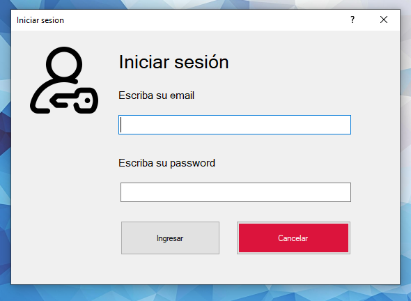
¿Como funciona?:
Proposito:
Permite iniciar sesión e ingresar al sistema.
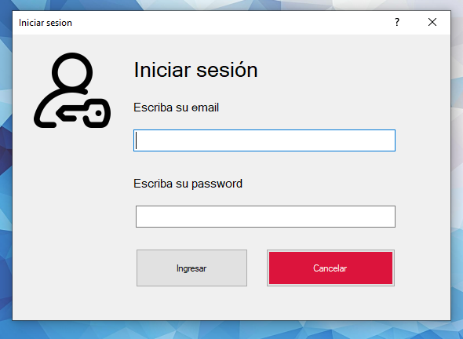
¿Como funciona?:
- 1) El cliente hace click en iniciar sesión.
- 2) Se ingresa email y contraseña.
- 3) Si es correcto ingresamos al sistema.
Registrarse:
Proposito:
Nos permite registrarnos en el sistema como clientes.
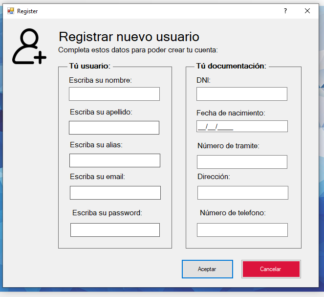
¿Como funciona?:
Proposito:
Nos permite registrarnos en el sistema como clientes.
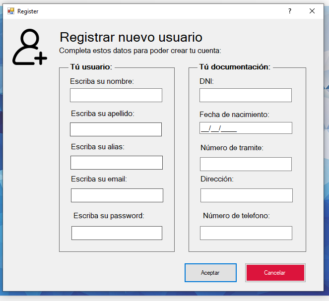
¿Como funciona?:
- 1) El cliente hace click en registrarse.
- 2) Se despliega la pantalla mostrando todos los campos.
- 3) Se completan los datos.
- 4) Se hace click en aceptar, se guarda el cliente e iniciamos sesión.
Perfil:
Proposito:
Nos permite ver nuestros datos como cliente y poder modificarlos.
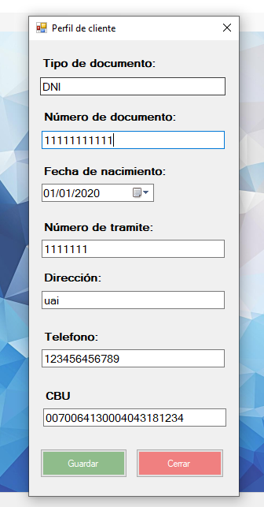
¿Como funciona?:
Proposito:
Nos permite ver nuestros datos como cliente y poder modificarlos.
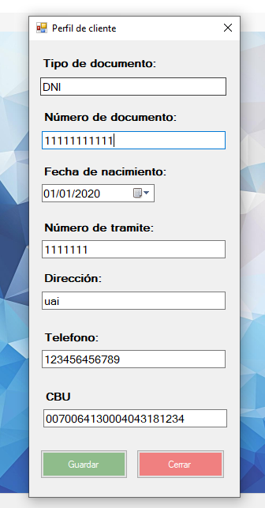
¿Como funciona?:
- 1) El cliente hace click en cliente->perfil
- 2) Se despliega la pantalla visualizando los datos.
- 3) Cambiamos un valor.
- 4) Se hace click en aceptar se guardan los datos.
Publicar venta:
Proposito:
Publicar una orden de venta de monedas de un cliente dentro del mercado.
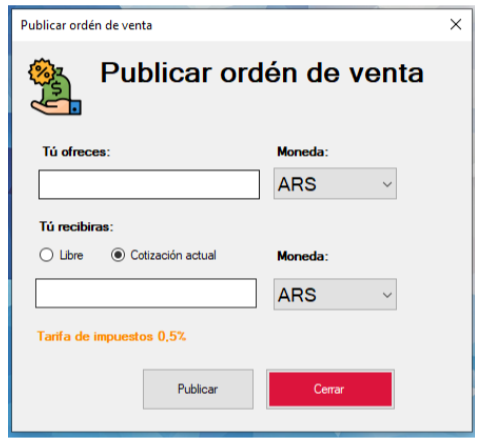
¿Como funciona?:
Proposito:
Publicar una orden de venta de monedas de un cliente dentro del mercado.
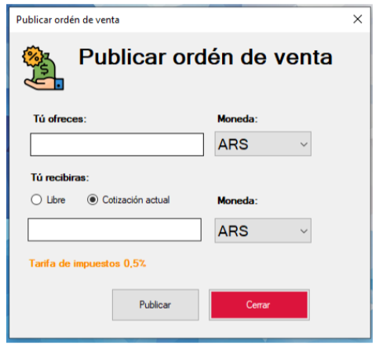
¿Como funciona?:
- 1) El cliente ingresa al módulo de venta
- 2) Se despliega la pantalla permitiéndole al cliente configurar su venta como desee.
- 3) El cliente selecciona una de sus monedas, observando el saldo actual de cada billetera.
- 4) Completa el valor de saldo a vender.
- 5) Selecciona la moneda que es de su interés.
- 6) En el campo cantidad saldo, se actualiza el valor, que corresponde con la conversión de las monedas.
- 7) El cliente hace click en publicar.
- 9) El cliente hace click en cerrar.
Recomendar compras:
Proposito:
Sugerir al cliente posibles opciones de compra en base a su perfil.
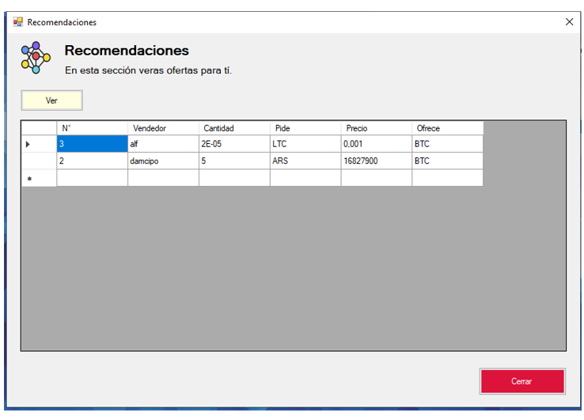
¿Como funciona?:
Proposito:
Sugerir al cliente posibles opciones de compra en base a su perfil.
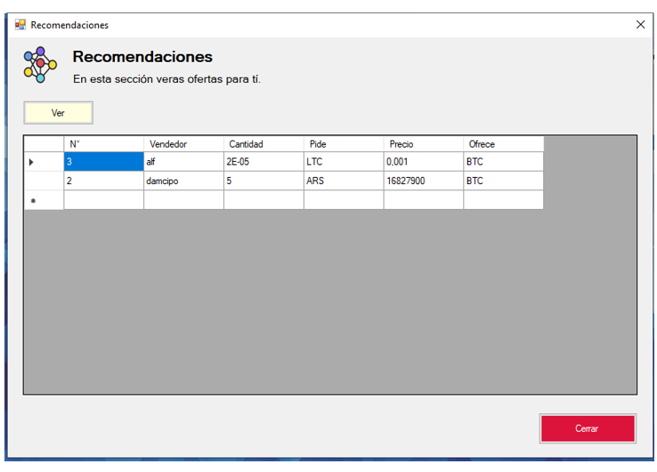
¿Como funciona?:
- 1) El cliente ingresa al módulo de recomendaciones, haciendo click en el menú: mercado->recomendaciones.
- 2) El sistema despliega la pantalla de recomendaciones, se muestra en un listado la moneda, cantidad y saldo que el usuario está dispuesto a vender a cambio otra moneda.
- 3) El cliente ha encontrado una sugerencia que es de su interés, hace click sobre una sugerencia.
- 4) El sistema despliega la pantalla.
- 5) Si el cliente quiere hacer una nueva consulta, vuelve a seleccionar otra recomendación
- 6) El cliente cierra la ventana.
Buscar ofertas:
Proposito:
Realizar búsquedas de ordenes de ventas.
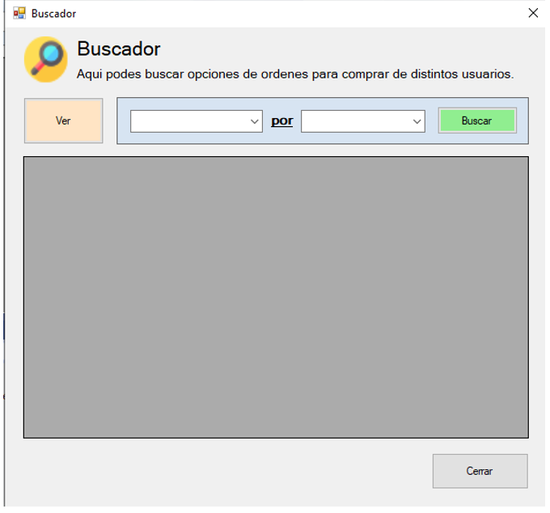
¿Como funciona?:
Proposito:
Realizar búsquedas de ordenes de ventas.
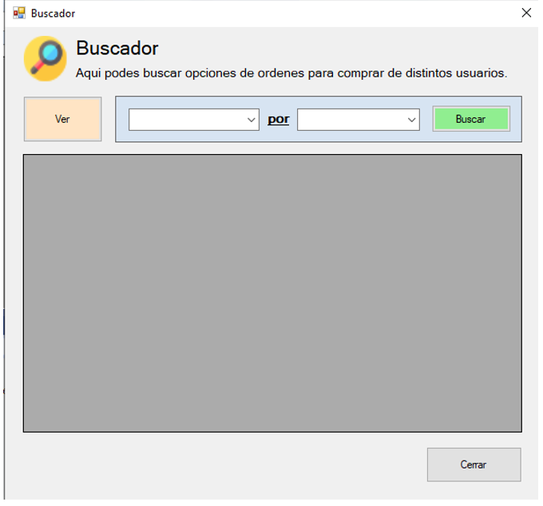
¿Como funciona?:
- 1) El actor selecciona las monedas que le interesa buscar ventas.
- 2) Se procesa la búsqueda y retornan resultados al cliente.
- 3) El cliente selecciona la oferta que le interesa y hace click en el botón de ver.
- 1) Se muestra la pantalla de orden de venta
Visualizar operación:
Proposito:
Visualizar una operación de compra y sus costos de comisión.
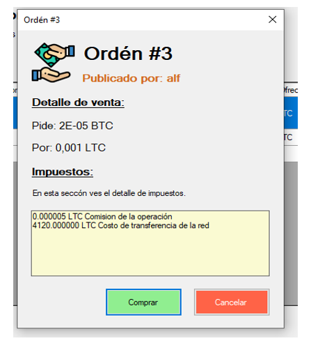
¿Como funciona?:
Proposito:
Visualizar una operación de compra y sus costos de comisión.
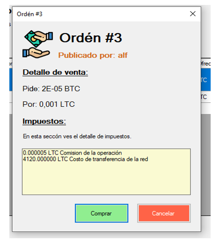
¿Como funciona?:
- 1) El actor inicia la pantalla desde el buscador de ofertas.
- 2) Se consultan el detalle de la operación.
- 3) Se invoca al CUN 005 para obtener los costos de la operación, se visualizan en la interfaz
- 4) El cliente decide realizar la operación hace click en el botón aceptar.
- 5) Se invoca al CUN 006 para verificar los saldos de las billeteras frente a la operación a realizar.
- 6) Se invoca al CUN 007 para hacer las transferencias
- Se muestra un mensaje de éxito informando de la transferencia realizada.
Consultar saldo billeteras:
Proposito:
Poder habilitar al cliente una opción de visualización única de todos los saldos de las billeteras que tiene de cada una de las monedas.
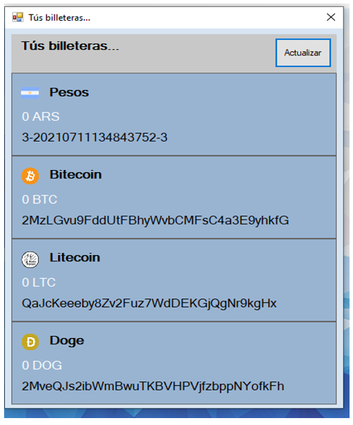
¿Como funciona?:
Proposito:
Poder habilitar al cliente una opción de visualización única de todos los saldos de las billeteras que tiene de cada una de las monedas.
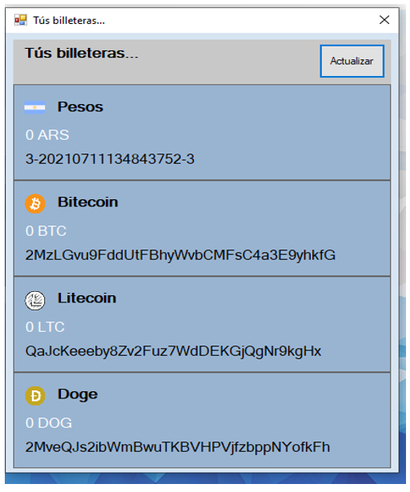
¿Como funciona?:
- 1) El actor accede al menú, “operar”, elige la opción, “Mis billeteras”.
- 2) Se carga la pantalla de visualización.
- 3) Se obtienen las billeteras asociadas a la cuenta que el cliente tiene asociada a su cliente.
- 4) Se consulta al proveedor para el caso de las cuentas de criptomonedas el valor actual disponible.
- 5) Se consulta para cada billetera si hay costos de comisiones aun no acreditados, se resta del total actual.
- 6) Se visualiza la información en la pantalla.
- 7) El cliente hace click en cerrar.
- 1) Se cierra la ventana.
Consultar CBU:
Proposito:
Consultar el número de cuenta bancaria para acreditar fondos.
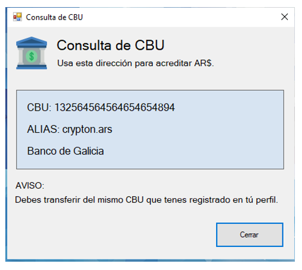
¿Como funciona?:
Proposito:
Consultar el número de cuenta bancaria para acreditar fondos.
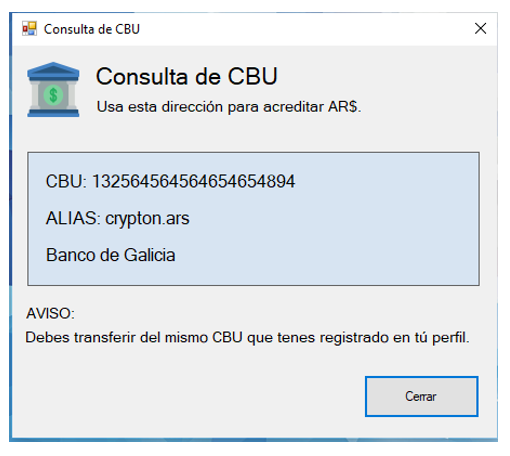
¿Como funciona?:
- 1) El cliente ingresa al módulo de banco / consulta de CBU.
- 2) Se obtiene la billetera del vendedor de la moneda en cuestión y se calculan el costo de la comisión para el valor de la operación de “venta”.
- 3) Hace click en copiar.
- 4) Se copia la información bancaria al portapapeles.
- 5) Se consulta para cada billetera si hay costos de comisiones aun no acreditados, se resta del total actual.
- 6) Hace click en cerrar.
- 7) Se cierra la pantalla.
Solicitar extracción:
Proposito:
Poder solicitar que se realice un retiro de fondos.
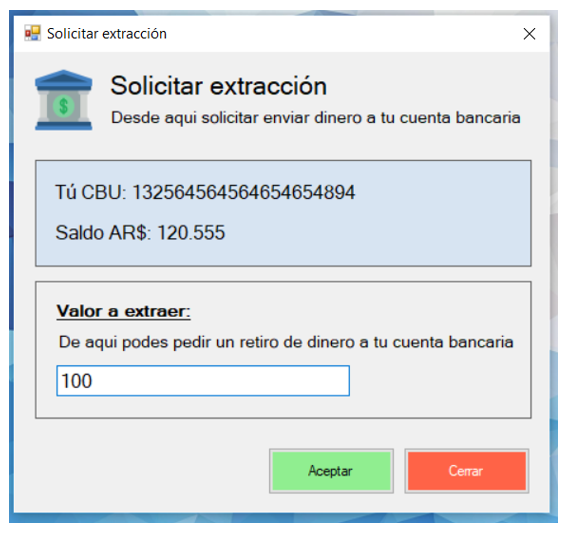
¿Como funciona?:
Proposito:
Poder solicitar que se realice un retiro de fondos.
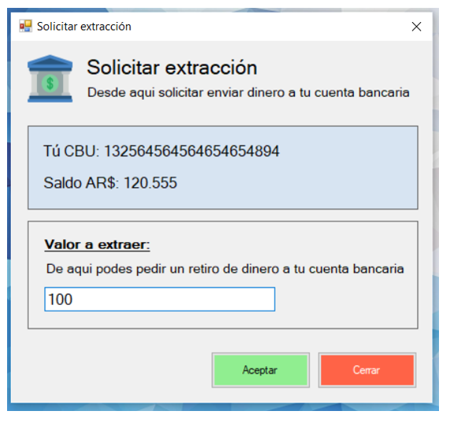
¿Como funciona?:
- 1) Ingresar al módulo banco / Retirar saldos.
- 2) Se despliega la pantalla, mostrando el cbu y el saldo actual de la billetera en ARS.
- 3) Se ingresa el valor a extraer y se hace click en aceptar.
- 4) Se recibe el valor ingresado, se valida si la cuenta posee esa cantidad.
- 5) Se registra la solicitud de extracción.
- 6) Se muestra un mensaje de éxito.
- 7) Hace click en Ok.
- 8) Se cierra la pantalla del módulo.
Extraer crypto monedas:
Proposito:
Permitir la extracción de una cripto moneda a una cuenta de otra plataforma.
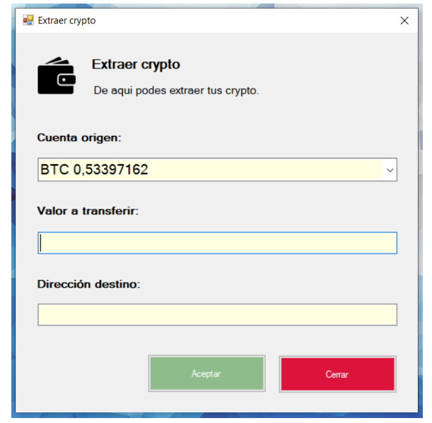
¿Como funciona?:
Proposito:
Permitir la extracción de una cripto moneda a una cuenta de otra plataforma.
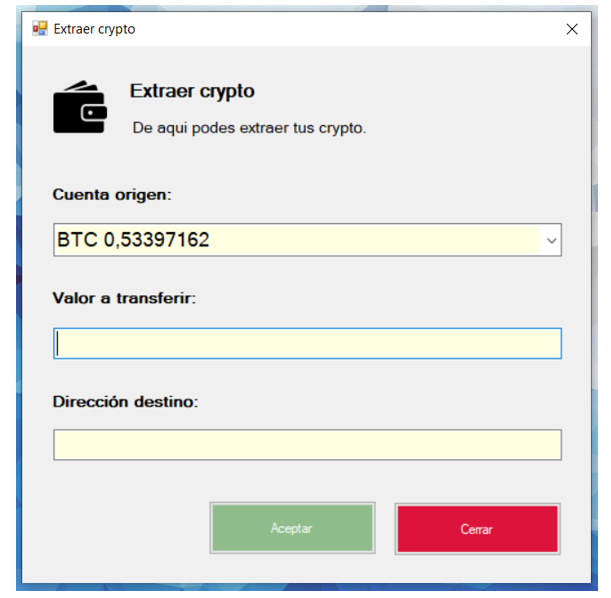
¿Como funciona?:
- 1) Ingresar al módulo cliente / extraer cripto monedas.
- 2) Se despliega la pantalla, mostrando la lista de solicitudes de extracción.
- 3) El cliente selecciona la moneda la cual le interesa extraer saldo, carga el valor en la caja de texto al igual que la dirección destino. Hace click en aceptar.
- 4) Se reciben los datos de la solicitud.
- 5) Se consulta al proveedor los costos de la transferencia y se despliega por pantalla el costo y la opción de aceptar o cancelar.
- 6) Hace click en Aceptar.
- 7) Se procesa la transferencia con el proveedor si es exitosa se muestra un mensaje de éxito.
- 8) Se cierra la pantalla.